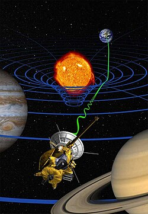
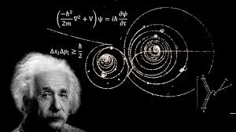
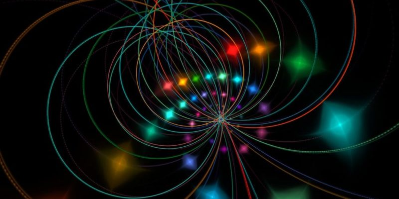
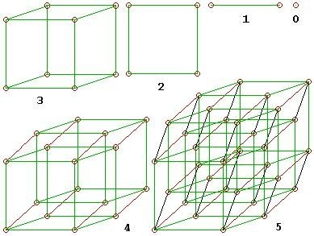

Conoce las explicaciones científicas sobre el origen y la naturaleza del cosmos
¿Que es teoria de la relatividad?

La teoría de la relatividad incluye tanto a la teoría de la relatividad especial como la de la relatividad general, formuladas principalmente por Albert Einstein a principios del siglo xx, que pretendían resolver la incompatibilidad existente entre la mecánica newtoniana y el electromagnetismo.
La teoría de la relatividad especial, publicada en 1905, trata de la física del movimiento de los cuerpos en ausencia de fuerzas gravitatorias, en el que se hacían compatibles las ecuaciones de Maxwell del electromagnetismo con una reformulación de las leyes del movimiento. En la teoría de la relatividad especial, Einstein, Lorentz y Minkowski, entre otros, unificaron los conceptos de espacio y tiempo, en un tramado tetradimensional al que se le denominó espacio-tiempo. La relatividad especial fue una teoría revolucionaria para su época, con la que el tiempo absoluto de Newton quedó relegado y conceptos como la invariabilidad en la velocidad de la luz, la dilatación del tiempo, la contracción de la longitud y la equivalencia entre masa y energía fueron introducidos.
1895: Persiguiendo un rayo de luz

A continuación te explicamos cómo Einstein comenzó sus experimentos mentales con solo 16 años y cómo esto le llevó finalmente a crear la ecuación más revolucionaria de la física moderna.
Sus descabelladas predicciones de la relatividad acerca del comportamiento de la materia, el espacio y el tiempo han probado ser correctas durante 100 años consecutivos.
Para entonces, el desprecio mal disimulado de Einstein por los métodos educativos rígidos y autoritarios de su Alemania natal ya le había supuesto la expulsión del equivalente actual de instituto, por ello mudó su casa a Zúrich con la esperanza de asistir a la Escuela Politécnica Federal (ETH).Sin embargo, Einstein decidió que primero asistiría durante un año a una escuela en Aarau, una ciudad cercana, para prepararse. La institución hacía hincapié en métodos vanguardistas como el pensamiento independiente y la visualización de conceptos. En ese entorno feliz, pronto empezó a preguntarse cómo sería correr junto a un rayo de luz.
Importancia de la Teoría de la Relatividad
Las Teorías de Einstein refundaron la física moderna. Fueron adoptadas rápidamente por todos los grandes centros de pensamiento y estudio de la física en el mundo.
Tuvieron además un importante impacto en la filosofía, ya que entre otras cosas negaban la existencia de un tiempo absoluto y permitían pensar, en términos serios, asuntos que otrora eran exclusivos de la fantasía y la ensoñación, como la manipulación del tiempo o los viajes espaciales a alta velocidad.
Además, se tiene constancia de las leves pero innegables diferencias en el envejecimiento y el transcurso del tiempo que se dan entre astronautas y habitantes de la Tierra, dado que estos últimos, al estar más sometidos a la gravedad del planeta, viven el tiempo más aprisa
Las teorías de Einstein permitieron el surgimiento de la cosmología, que es una rama de la física dedicada a la determinación de las condiciones de origen del universo. Sus observaciones sobre la curvatura de la luz fueron comprobadas públicamente en 1919, en el marco de un eclipse solar
Magnitudes físicas
En relatividad, estas magnitudes físicas son representadas por vectores 4-dimensionales o bien por objetos matemáticos llamados tensores, que generalizan los vectores, definidos sobre un espacio de cuatro dimensiones. Matemáticamente estos 4-vectores y 4-tensores son elementos definidos del espacio vectorial tangente al espacio-tiempo (y los tensores se definen y se construyen a partir del fibrado tangente o cotangente de la variedad que representa el espacio-tiempo).
Espacio tridimensional euclídeo
Espacio-tiempo de Minkowski
Punto
Suceso
Longitud
Intervalo
Velocidad
Cuadrivelocidad
Momentum
Cuadrimomentum
¿Qué es la Teoría de cuerdas?

La Teoría de Cuerdas es un marco teórico en física que busca unificar todas las fuerzas fundamentales de la naturaleza, incluyendo la gravedad, en una sola teoría coherente. Es una de las principales candidatas para una teoría del todo, que explicaría tanto la mecánica cuántica (que rige lo muy pequeño) como la relatividad general (que rige lo muy grande).
Esta hipótesis científica y modelo fundacional sostiene que las partículas materiales que conocemos, como los elementos constitutivos del átomo son en realidad estados vibracionales de una «cuerda» o «filamento».
La Teoría de Cuerdas propone que el espacio-tiempo tiene muchas más dimensiones de las que podemos percibir (once, para ser exactos). Por eso, las “cuerdas” fundamentales pueden vibrar de muchos modos en todas estas dimensiones.
En la física tradicional, las partículas fundamentales (como los electrones o quarks) se consideran puntos sin estructura interna. En la Teoría de Cuerdas, en cambio, se postula que estas partículas son diminutas cuerdas vibrantes. Estas cuerdas pueden ser abiertas (con dos extremos) o cerradas (como un lazo), y su vibración determina qué tipo de partícula representan.
Orígenes de la teoría de cuerdas
Los orígenes de la teoría de cuerdas se encuentran en un trabajo escrito por el estadounidense John Henry Schwarz y el francés Jöel Scherk, que dieron a conocer en 1974. En dicho artículo, estos físicos apelaron a la existencia de cuerdas para realizar una descripción de la fuerza de gravedad, dejando de lado la consideración de las llamadas partículas puntuales o puntos materiales.
sta teoría de cuerdas de Schwarz y Scherk se presentó como una teoría del todo, ya que supone una hipótesis que daría un esquema teórico único a la totalidad de las interacciones fundamentales. De todas maneras, sus postulados no tuvieron demasiada trascendencia hasta la denominada primera revolución de las supercuerdas, que empezó a desarrollarse en 1984 y se extendió hasta 1986.
En este periodo, diversos científicos realizaron aportes. Así se logró cancelar la anomalía de la teoría de cuerdas de tipo I gracias al mecanismo Green-Schwarz, se descubrió la cuerda heterótica y se introdujo la variedad de Calabi-Yau (o espacios de Calabi-Yau) para esgrimir que hay seis dimensiones compactas que permiten la obtención de la supersimetría N=1.
Es importante indicar que hoy no hay una única teoría de cuerdas, sino varias hipótesis que presentan ciertas diferencias entre sí. Incluso existe una teoría de supercuerdas, que combina diferentes teorías de cuerdas e introduce a los fermiones a través de la supersimetría.
Variantes de la teoría/h2>
Teoría de cuerdas de Tipo I. Que consiste en cuerdas y D-branas tanto abiertas como cerradas, vibrando en un espacio-tiempo de diez dimensiones.
Teoría de cuerdas de Tipo IIA. Que consiste en cuerdas y D-branas únicamente cerradas, junto con gravitinos.
Teoría de cuerdas de Tipo IIB. Que difiere de la Tipo IIA en que es no quiral (conservando la paridad).
Teoría de cuerdas heterótica SO(32). También llamada Heterótica-O, basada en el grupo de simetría O(32).
Teoría de cuerdas heterótica E8xE8. También llamada Heterótica-E, basada en el grupo de Lie excepcional E8.
A pesar de que la teoría de cuerdas pudiera explicar de una manera innovadora algunos de los fenómenos físicos más retadores de la naturaleza, posee también notorias limitaciones. Por ejemplo, su matemática es válida únicamente en un espacio–tiempo de 11 dimensiones.
Por otro lado, las predicciones hechas siguiendo este modelo no han logrado ser lo suficientemente concretas como para contrastarlas con un modelo experimental. Para muchos, es una teoría tan ambiciosa y abarcadora que resulta imposible comprobarla o desmentirla científicamente, por lo que ha sido acusada a menudo de pseudociencia.
¿Cuál es la cuarta?
La cuarta dimensión es un concepto que ha sido explorado en la teoría de la relatividad de Einstein y en la mecánica cuántica. Según estas teorías, la cuarta dimensión se refiere al tiempo. Mientras que las tres dimensiones espaciales nos permiten movernos hacia adelante y hacia atrás, hacia los lados y hacia arriba y hacia abajo, la cuarta dimensión nos permite movernos en el tiempo. Esto implica que el tiempo no es una entidad lineal y estática, sino que puede ser influenciado por la gravedad y la velocidad.
¿Te has preguntado alguna vez cómo sería vivir en un mundo con cuatro dimensiones espaciales? Es un experimento mental muy difícil ya que estamos muy acostumbrados a nuestro mundo tridimensional. Así que comencemos con algo simple.
Imagina vivir en un mundo bidimensional, similar a los videojuegos antiguos como Pac-Man o Super Mario Brothers. Solo podría moverse en un plano plano , que puede considerar como una hoja de papel infinitamente delgada. No comprenderías lo que significa moverse por encima y por debajo de él. Por ejemplo, si estuvieras caminando por la calle y vieras una gran rama de árbol frente a ti, no habría forma de pasar sobre ella y tendrías que rodearla.
Al vivir en un mundo tridimensional, podemos movernos por encima y por debajo de los objetos, además de las otras direcciones en un plano bidimensional. Bueno, introducir otra dimensión sería similar a pasar de dos a tres dimensiones. La cuarta dimensión es una extensión de la geometría del espacio que nos daría más formas de movernos de un lugar a otro.
Cuarta dimensión en matemáticas

Un ángulo recto se describe como un cuarto de una revolución. La geometría cartesiana escoge direcciones ortogonales arbitrariamente a través del espacio, lo que significa que cada dirección está en ángulo recto con las demás. Las tres dimensiones ortogonales del espacio se conocen como altitud, longitud y latitud. La cuarta dimensión, por lo tanto, es la dirección en el espacio con ángulo recto a las 3 direcciones observables..
Si tuviéramos que dibujar un mundo de dimensión cero, ¿cómo se vería? Bueno, todo lo que necesitaríamos dibujar es un puntito. Las dimensiones cero implican que no hay libertad de movimiento, por lo que todos los objetos existirían en la misma ubicación exacta en tal mundo, que está representado por un punto..
Qué tal un mundo unidimensional? En este caso, los objetos solo podrían moverse de una manera particular. Imagínese dibujar un punto en una hoja de papel para representar un mundo de dimensión cero. Para agregar otra dimensión, dibujaría un punto más y luego conectaría los dos. El dibujo resultante es una línea, que representa el medio a lo largo del cual los objetos pueden moverse en este mundo unidimensional..
De manera similar, la representación de un mundo bidimensional se lograría dibujando una línea paralela y conectando los dos. Los objetos ahora podrían moverse a lo largo de un avión..
Dimensiones múltiples
Una de las teorías más aceptadas es la de las dimensiones múltiples, que postula la existencia de universos paralelos o realidades alternativas. Según esta teoría, nuestro universo sería solo uno de los muchos universos que coexisten en un multiverso. Cada uno de estos universos tendría sus propias leyes físicas y condiciones, lo que podría explicar fenómenos inexplicables en nuestro propio universo.
Esta teoría ha sido respaldada por diversos experimentos y observaciones científicas, aunque aún queda mucho por descubrir y entender. La idea de que existen otras dimensiones más allá de las tres espaciales y la temporal ha capturado la imaginación de científicos y escritores de ciencia ficción por igual.
La quinta dimensión
unque la teoría de la relatividad solo postula la existencia de cuatro dimensiones, algunos físicos teóricos han propuesto la existencia de una quinta dimensión. Esta dimensión adicional podría explicar fenómenos que aún no comprendemos completamente, como la gravedad y la materia oscura.
La idea de una quinta dimensión se basa en la teoría de cuerdas, que postula que las partículas fundamentales no son puntos, sino pequeñas cuerdas vibrantes. Según esta teoría, las cuerdas vibran en diferentes frecuencias, lo que determina sus propiedades y su interacción con otras partículas. La quinta dimensión sería el espacio en el que estas cuerdas vibran.
.jpg)
.jpg)
.jpg)